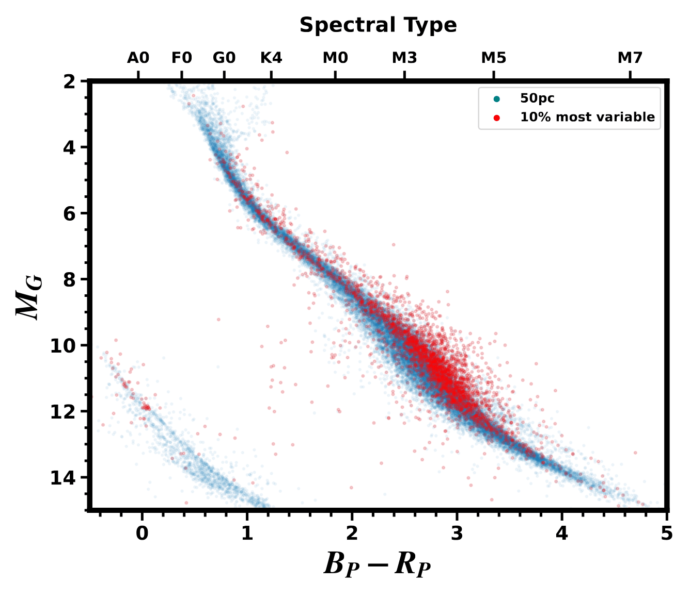
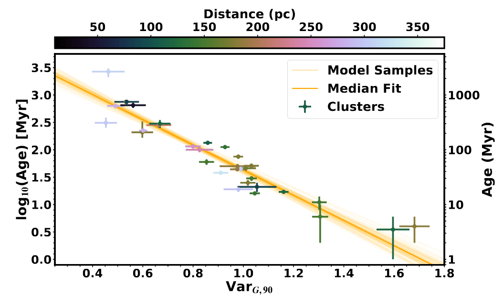

Age is a fundamental parameter of a star, and it is one of the hardest to measure. Stars don't come with birth certificates. Yet to study how planets evolve we need to know how old each planet is, which in practice means how old its star is. We use several clocks, each good over a different range of ages, and cross-check them wherever they overlap.
The most reliable way to date a star is to find its siblings. Stars that formed together in a cluster, moving group, or stream share an age, and a group can be dated far more precisely than any one star, from its color-magnitude diagram, rotation, and lithium. ESA's Gaia mission measures positions and motions in enough detail to pick out these groups in six dimensions (three in space and three in velocity).
Several of our planet hosts turned out to sit in groups nobody had cataloged. We named these the MELANGE associations. The TOI-1224 system is a good example: an earlier study put it in a roughly 90 Myr group, but its neighbors are clearly older, about 200 Myr, and form a separate association, MELANGE-5. The full story is on the TOI-1224 page.
To find a star's siblings we use Comove, a Python package by Adam Kraus for finding comoving neighbors of a target star. Its FindFriends tool queries Gaia for neighbors with similar positions and velocities, gathers youth indicators for them, and makes diagnostic plots; its BinProb tool estimates whether a close neighbor is a bound companion or a chance alignment. If you use FindFriends, the README asks that you cite Tofflemire et al. (2021).
Stars slow down as they age, so rotation is a clock. Gyrochronology calibrates that clock using clusters of known age. We measure rotation periods from TESS light curves for about a million nearby stars in TARS, and extend the calibration to older ages with benchmark clusters such as NGC 752 (1.3 Gyr).
Young stars are more active, so they vary more in brightness. For any one star that is a weak clock, since activity differs even between similar stars. But the typical variability of a large group of stars tracks its age closely. We measure it without any light curves at all: Gaia computes each star's photometric uncertainty from the scatter in its repeated measurements, so a variable star shows an uncertainty larger than expected for its brightness. We call this the excess uncertainty (Barber & Mann 2023; the idea came from a study of variable white dwarfs).

A first hint that this would work: the most variable stars within 50 pc sit high on the main sequence, where we expect pre-main-sequence stars and interacting binaries.
We use the 90th percentile of the excess uncertainty in a group (VarX-90, where X is the photometric band). This makes the method robust to outliers and to field stars mixed into a membership list, a common problem. We drop the hottest and coolest stars, where the signal is weak. Calibrated on clusters of known age, the relation between VarX-90 and age is tight (below), with a mild distance effect because distant clusters are fainter.

Applying this Excess Variability-based Age (EVA) method needs only a list of stars and the EVA code. It reproduces literature ages for many groups, sometimes with uncertainties smaller than isochrone ages, and it can flag proposed groups whose members look like a random draw of field stars rather than a real young population.
Low-mass stars burn their lithium at a rate set by their mass and age, so the temperature where lithium disappears in a young group, the lithium depletion boundary, gives a precise age from about 10 to 100 Myr. Read more on the lithium depletion page.